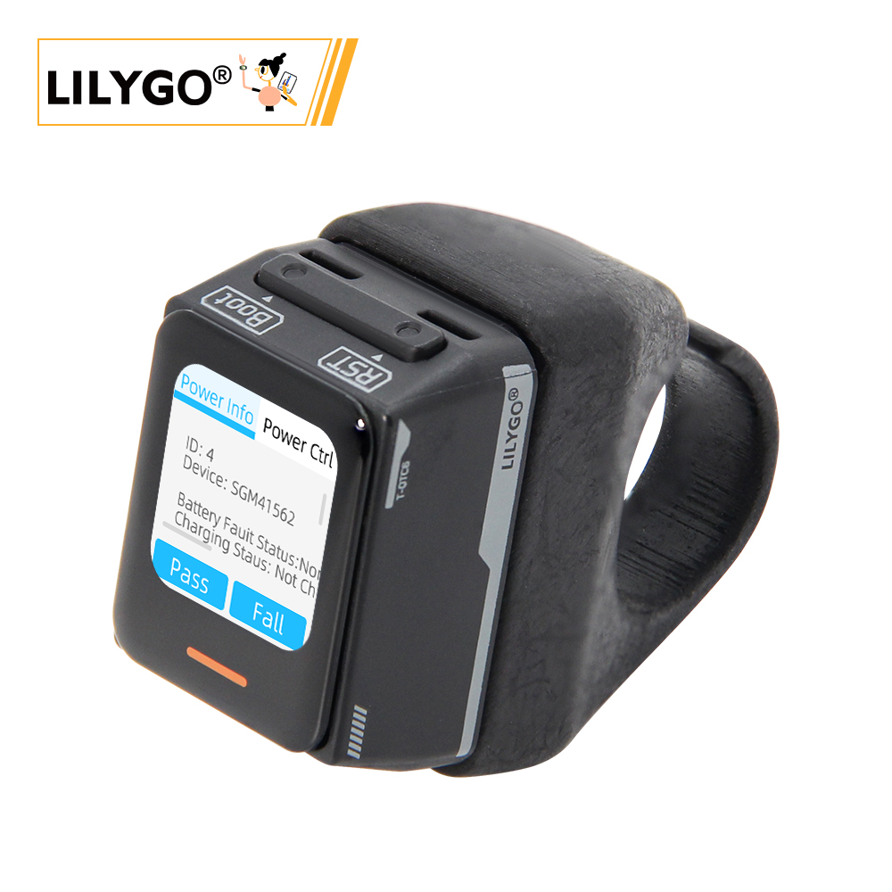
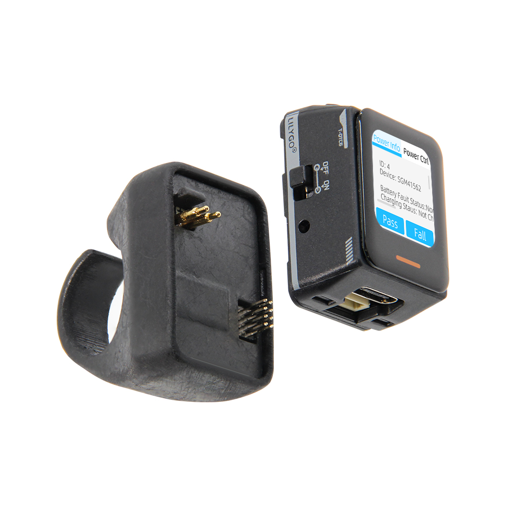
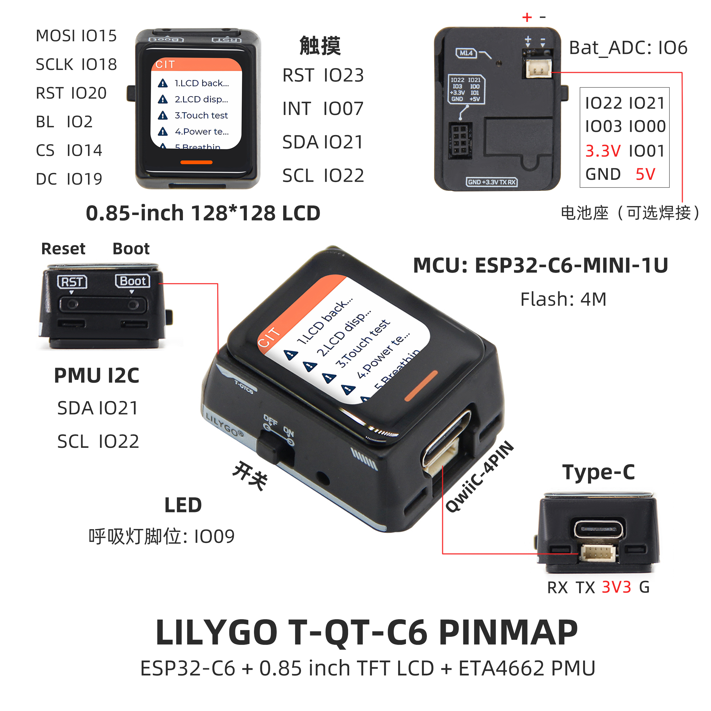
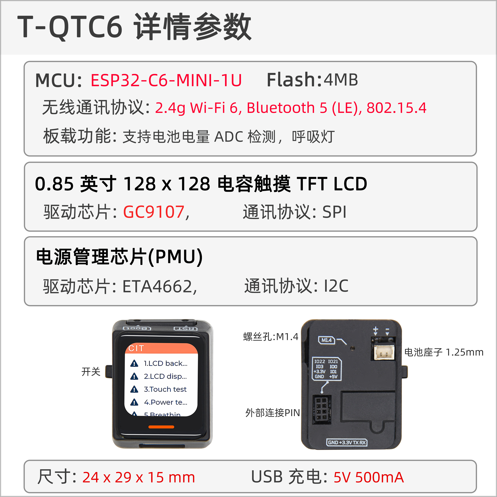

中文 简体
中文 简体LILYGO T-QT C6

版本迭代:
| Version | Update date | Update description |
|---|---|---|
| T-QT-C6_MCU_V1.0 | 2023-12-20 | 初始版本 |
| T-QT-C6_MCU_V1.1 | 2024-03-27 | 新增对电池背板的支持 |
| T-QT-C6_MCU_V1.2 | 2024-06-13 | 修改电源管理芯片为SGM41562 |
| T-QT-C6_Battery_V1.2 | 2025-08-11 | 修改背板引脚，改用2pin、1.25mm间距引脚座子连接电池，提高系统稳定性 |
购买链接
| Product | SOC | FLASH | PSRAM | Link |
|---|---|---|---|---|
| T-QT C6 | ESP32-C6 | 4M | 4M | LILYGO Mall |
目录
描述
LILYGO T-QT-C6 是基于ESP32-C6-MINI-1U微控制器的智能可穿戴开发套件，集成了0.85英寸128×128分辨率的TFT LCD显示屏、6轴传感器（LSM6DSL，支持加速度计和陀螺仪功能）以及SGM41562电源管理单元（PMU）。其核心特性包括：内置电池供电、触摸交互、呼吸灯状态指示、4MB Flash存储，并通过QWIIC 4-PIN接口及I2C/SPI引脚支持硬件扩展。支持Wi-Fi 6/蓝牙无线通信，适用于运动监测、嵌入式开发或便携式交互设备场景。产品设计上采用紧凑型设计，兼顾低功耗与高集成度，适合开发者在物联网、穿戴设备等领域进行原型设计与功能验证。
预览
实物图

引脚图

模块
MCU
- 模块：ESP32-C6-MINI-1U
- 芯片：ESP32-C6-FH4
- PSRAM：4M
- FLASH：-
- 其他说明：更多资料请访问乐鑫官方ESP32-C6-MINI-1U数据手册
屏幕
- 屏幕型号：N085-1212TBWIG06-C08
- 尺寸：0.85英寸
- 分辨率：128x128px
- 屏幕类型：TFT
- 驱动芯片：GC9107
- 使用总线通信协议：标准SPI
触摸芯片
- 芯片：CST816T
- 总线通信协议：IIC
- 其他说明：支持上滑、下滑、左滑、右滑、双击、单击、长按手势触发，还有多种中断触发方式结合一体，默认情况下无触摸几秒后自动进入睡眠省电模式
电源管理芯片
T-QT-C6_V1.0-V1.1
- 芯片：ETA4662
- 总线通信协议：IIC
- 其他说明：具有电源路径管理的芯片，自动识别电池电源和USB电源，在无电池插入时候自动切换为USB供电，在无USB供电时候自动切换为电池供电
T-QT-C6_V1.2
- 芯片：SGM41562
- 总线通信协议：IIC
- 其他说明：具有电源路径管理的芯片，自动识别电池电源和USB电源，在无电池插入时候自动切换为USB供电，在无USB供电时候自动切换为电池供电
电池背板惯性传感器
T-QT-C6_V1.1-V1.2
- 芯片：LSM6DSLTR
- 总线通信协议：IIC
- 其他说明：6轴传感器，支持步数计数，姿态检测等
概述

| 组件 | 描述 |
|---|---|
| MCU | ESP32-C6-MINI-1U |
| Flash | 4MB |
| PSRAM | 4MB |
| 屏幕 | 0.85英寸 GC9107 TFT (128×128) |
| 触摸 | CST816T 触摸电容屏 |
| 传感器 | LSM6DSLTR 6轴IMU |
| 电源管理 | SGM41562 PMU |
| 无线 | Wi-Fi 6 + Bluetooth 5 (LE) |
| USB | 1 × USB Port and OTG (TYPE-C接口) |
| IO 接口 | 2 × 2×7 扩展IO接口 |
| 拓展接口 | QWIIC 4pin + 电池接口 + 电源接口 |
| LED | WS2812B/C 呼吸灯 |
| 按键 | 1 x RESET 按键 + 1 x BOOT 按键 |
| 尺寸 | 33×24×44.5mm |
快速开始
示例支持
| Example | Support IDE And Version | Description | Picture |
|---|---|---|---|
| Battery_Voltage | [Arduino IDE][arduino-esp32-libs_v3.0.2] |
||
| Breathing_Light | [Arduino IDE][arduino-esp32-libs_v3.0.2] |
||
| ChipScan | [Arduino IDE][arduino-esp32-libs_v3.0.2] |
||
| CST816T | [Arduino IDE][arduino-esp32-libs_v3.0.2] |
||
| Deep_Sleep | [Arduino IDE][arduino-esp32-libs_v3.0.2] |
||
| Light_Sleep | [Arduino IDE][arduino-esp32-libs_v3.0.2] |
||
| ETA4662 | [Arduino IDE][arduino-esp32-libs_v3.0.2] |
||
| GFX | [Arduino IDE][arduino-esp32-libs_v3.0.2] |
||
| IMU | [Arduino IDE][arduino-esp32-libs_v3.0.2] |
||
| IMU_Level | [Arduino IDE][arduino-esp32-libs_v3.0.2] |
||
| SGM41562 | [Arduino IDE][arduino-esp32-libs_v3.0.2] |
||
| Lvgl_CIT_ETA4662 | [Arduino IDE][arduino-esp32-libs_v3.0.2] |
出厂初始测试文件 | |
| Lvgl_CIT_SGM41562 | [Arduino IDE][arduino-esp32-libs_v3.0.2] |
出厂初始测试文件 | |
| Light_Sleep_Wakeup | [Arduino IDE][arduino-esp32-libs_v3.0.2] |
||
| （更多示例请参考GitHub仓库） |
| Firmware | Description | Picture |
|---|---|---|
| Lvgl_CIT_ETA4662 | 出厂初始测试文件 | |
| Lvgl_CIT_SGM41562 | 出厂初始测试文件 |
PlatformIO
安装VisualStudioCode，根据你的系统类型选择安装。
打开VisualStudioCode软件侧边栏的“扩展”（或者使用Ctrl+Shift+X打开扩展），搜索“PlatformIO IDE”扩展并下载。
在安装扩展的期间，你可以前往GitHub下载程序，你可以通过点击带绿色字样的“<> Code”下载主分支程序，也通过侧边栏下载“Releases”版本程序。
扩展安装完成后，打开侧边栏的资源管理器（或者使用Ctrl+Shift+E打开），点击“打开文件夹”，找到刚刚你下载的项目代码（整个文件夹），点击“添加”，此时项目文件就添加到你的工作区了。
打开项目文件中的“platformio.ini”（添加文件夹成功后PlatformIO会自动打开对应文件夹的“platformio.ini”）,在“[platformio]”目录下取消注释选择你需要烧录的示例程序（以“default_envs = xxx”为标头），然后点击左下角的“[√]”进行编译，如果编译无误，将单片机连接电脑，点击左下角“[→]”即可进行烧录。
Arduino
安装Arduino，根据你的系统类型选择安装。
打开项目文件夹的“example”目录，选择示例项目文件夹，打开以“.ino”结尾的文件即可打开Arduino IDE项目工作区。
打开右上角“工具”菜单栏->选择“开发板”->“开发板管理器”，找到或者搜索“esp32”，下载作者名为“Espressif Systems”的开发板文件。接着返回“开发板”菜单栏，选择“ESP32 Arduino”开发板下的开发板类型，选择的开发板类型由“platformio.ini”文件中以[env]目录下的“board = xxx”标头为准，如果没有对应的开发板，则需要自己手动添加项目文件夹下“board”目录下的开发板。
打开菜单栏“文件”->“首选项”，找到“项目文件夹位置”这一栏，将项目目录下的“libraries”文件夹里的所有库文件连带文件夹复制粘贴到这个目录下的“libraries”里边。
在 "工具 "菜单中选择正确的设置，如下表所示。
{kind=link}
{kind=link}
| Setting | Value |
|---|---|
| Board | ESP32C6 Dev Module |
| Upload Speed | 921600 |
| CPU Frequency | 160MHz |
| Flash Mode | QIO |
| Flash Size | 4MB (32Mb) |
| Core Debug Level | None |
| Partition Scheme | Huge APP (3MB No OTA/1MB SPIFFS) |
{kind=link}
{kind=link}
开发平台
引脚总览
| 屏幕引脚 | ESP32C6引脚 |
|---|---|
| MOSI | IO15 |
| SCLK | IO18 |
| RST | IO20 |
| BL | IO2 |
| CS | IO14 |
| DC | IO19 |
| 电池相关引脚 | ESP32C6引脚 |
|---|---|
| BATTERY_MEASUREMENT_CONTROL | IO8 |
| BATTERY_ADC_DATA | IO6 |
| 呼吸灯引脚 | ESP32C6引脚 |
|---|---|
| BREATHING_LIGHT | IO9 |
| 触摸芯片引脚 | ESP32C6引脚 |
|---|---|
| RST | IO23 |
| INT | IO7 |
| SDA | IO21 |
| SCL | IO22 |
| 睡眠唤醒引脚 | ESP32C6引脚 |
|---|---|
| SLEEP_WAKE_UP_INT | IO7 |
| 电源管理芯片引脚 | ESP32C6引脚 |
|---|---|
| SDA | IO21 |
| SCL | IO22 |
T-QT-C6_V1.1-V1.2
| 惯性传感器引脚 | ESP32C6引脚 |
|---|---|
| SDA | IO21 |
| SCL | IO22 |
| LSM6DSL_IIC_ADDRESS_MODE | IO3 |
| INT1 | IO0 |
| INT2 | IO1 |
T-QT-C6_V1.2
| 电源管理芯片引脚 | ESP32C6引脚 |
|---|---|
| INT | IO4 |
（详细引脚定义请参考原理图）
相关测试
| Firmware | Program | Description |
|---|---|---|
| [TQT-C6_V1.0-V1.2][Light_Sleep]_firmware_V1.0.0.bin | Light_Sleep | 功耗: 516.81uA |
| [TQT-C6_V1.0-V1.2][Deep_Sleep]_firmware_V1.0.0.bin | Deep_Sleep | 功耗: 172.61uA |
| （更多示例请参考GitHub仓库） |
常见问题
Q. T-QT C6的主要应用场景是什么？
A. T-QT C6专为智能可穿戴设备设计，适用于运动监测、健康追踪、智能戒指、便携式交互设备等场景。Q. 如何连接外部传感器？
A. 可以通过板载的QWIIC 4pin接口快速连接兼容的传感器模块，也可以通过2×7的扩展IO接口连接其他外设。Q. ESP32-C6有什么特点？
A. ESP32-C6支持Wi-Fi 6和蓝牙5，相比之前的ESP32系列具有更好的无线性能和功耗表现。Q. 如何实现低功耗运行？
A. 通过SGM41562电源管理芯片和ESP32-C6的低功耗模式，结合软件优化可以实现长时间电池供电。Q. 支持哪些开发框架？
A. 支持Arduino、PlatformIO、ESP-IDF和MicroPython等多种开发框架，满足不同开发者的需求。
项目
资料
- Espressif
- ETA4662_V1.8
- AN-CST816T-v1
- WS2812B-2020
- WS2812C-2020
- SGMICRO-SGM41562XGTR
- lsm6dsl
- lsm6dsl-stmicroelectronics_en